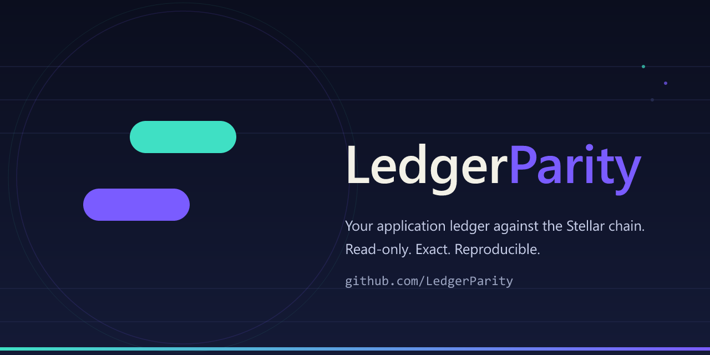

LedgerParity
Read-only reconciliation for Stellar payment operators: bring your application payment ledger into parity with ordinary classic Stellar payment operations — exactly, reproducibly, without fabricating missing evidence.
Developer preview — no adoption or production-readiness claimDownload v0.3.2-preview for Windows, Linux or macOS with checksums, examples and the offline dashboard.
The optional report hash contract has synthetic Protocol 28 testnet validation, including authorized registration, read-back, early renewal and measured fees. It records a hash assertion; it does not prove reconciliation correctness. Archived restoration and real operator validation remain outstanding.
Overview
Stellar settles payments on-chain; operators keep their own payment records. When a settlement notification is missed, an amount is off by a stroop, or a record is duplicated, someone must compare an application export against the chain by hand. LedgerParity makes that comparison exact, auditable, and replayable.
What parity means here
- A match requires the same network passphrase, sender, recipient, asset type/code/issuer, amount, and time window. Nothing is rounded or aliased.
- Observations without proof of coverage are reported, never silently assumed; the unproven stays
UNKNOWN. - Every decision, coverage limitation, and dependency pin is documented in each repository's
DECISIONS.md,PROJECT_HANDOFF.md, anddocs/backlog.md. - The reconciliation CLI never signs, funds, or moves funds, and it never claims validation it has not performed.
Status. These are functional, tested libraries and a runnable CLI. They are not established operator tooling: there is no demonstrated operator adoption, no deployed SDP validation, and no production-readiness claim. Drips or partnership admission is explicitly not claimed.
Repositories
ledger-parity-core
The matching engine and read-only Horizon ingestion. Normalizes and validates expectations; fetches
ordinary classic payment operations within provider-declared retention; classifies
matches, discrepancies, and unknowns.
ledger-parity-connectors
Validated import of application exports: canonical JSON/CSV plus a release-pinned SDP 7.0.0 payment CSV adapter with explicit sender/network/settlement scope. Strict validation, no invented fallbacks.
ledger-parity-cli
Runnable operator workflow: configure, reconcile, capture replayable evidence, and verify byte-identical offline replays. Includes the release-scoped SDP example and a deterministic demo.
Brand & docs
Organization files, brand assets, and this documentation. See
docs/SDP.md, docs/VERIFICATION.md, docs/SDP_EVIDENCE.md, and the
audit docs/GAP_ASSESSMENT.md for detailed evidence.
Concepts
Exact identity
A settlement matches only when all identity dimensions agree: network passphrase, sender, recipient,
asset type, asset code and issuer (case-sensitive for credit assets), and the time window. An
operation_id disambiguates multiple payments inside a single transaction. A token contract
address is never an issuer alias.
Amounts
Values are exact stroop integers within the signed int64 range, including at the limit. Inputs with excess precision fail validation; amounts are never rounded and no monetary tolerance is applied.
Time windows
A record supplies exactly one representation: a legacy timestamp or an explicit
settlement_start/settlement_end interval. Intervals are closed and are not
widened by time tolerance; they must fit the reconciliation window. A partially intersecting interval is
reported, never silently filtered. business_reference is separate from
reference_id, which means the transaction hash only — never a memo.
Coverage and UNKNOWN
Coverage is provider evidence, not a cryptographic history proof. A complete scan means provider-declared
retained history encloses the requested window, pages were traversed, and the retention boundary stayed
stable. Incomplete coverage, ambiguous multiple candidates, competing claims, and malformed observations
all remain UNKNOWN. Unknowns are reported separately and are not counted as financial
discrepancies.
The legacy slice-only FetchOnChainPayments wrapper discards coverage and is unsuitable for
definitive absence conclusions.
Horizon ingestion
The ingestor traverses descending numeric paging tokens against the configured endpoint (no arbitrary redirects or next-links), verifies the network passphrase before and after the scan, enforces request/response size and retry bounds, stops on failure with no successful ingestion result, and never lets an error become an empty scan. Durable checkpoints and crash-restart resume are not implemented; scans restart intentionally.
RPC corpus (developer tool)
A separate Node developer tool (tools/rpc-corpus) performs opt-in public-testnet reads only:
getNetwork/getTransaction JSON-RPC and Horizon GET. It never signs, funds, or
simulates. It captures ordinary-payment transactions and verifies that RPC results agree with Horizon
operation semantics. Runtime ingestion in the Go modules remains Horizon-only.
Quick start
Requirements
Go 1.22.2 or newer (a currently supported Go release is preferred). The RPC corpus uses Node 22+ with the
pinned @stellar/stellar-sdk (npm ci).
Run the tests from any checkout
go test ./...
go vet ./...
go build ./...Library flow (core)
h := ingest.NewHorizonIngestor("https://horizon-testnet.stellar.org")
h.Network = "Test SDF Network ; September 2015" // exact passphrase
res, err := h.Fetch(ctx, accounts, start.Add(-tol), end.Add(tol))
// pass res.Coverage into ReconcileOptions; set Coverage.InternalComplete
// only if the export covers every relevant ordinary payment.
opts := engine.ReconcileOptions{TimeframeToleranceSec: tol, Coverage: res.Coverage}
report := engine.NewReconciler(opts).Reconcile(
app, start, end, internalPayments, res.Payments)Connectors (import exports)
ips, err := sdp.Parse(csvReader, network, "deployment-name", sdp.Scope{
Release: sdp.Release, Sender: "GB…", Assertion: "…",
SettlementStart: start, SettlementEnd: end,
})CLI — offline SDP example
ledger-parity --config examples/sdp/config.json \
--bundle evidence.json --out report.json
# exit 3: 1 match, 1 discrepancy, 1 unresolved (fixture)
ledger-parity --replay evidence.json --out replayed.json
# byte-identical report; exit 3Exit codes
| Code | Meaning |
|---|---|
| 0 | Complete match — no discrepancies, no unknowns. |
| 1 | Runtime or configuration error — nothing produced. |
| 2 | Financial discrepancies found. |
| 3 | Unresolved evidence present (UNKNOWNs are never counted as discrepancies). |
Example scope discipline. The SDP workflow requires an independently known sender, network, and closed settlement interval declared by the caller. CSV creation/update time is never settlement time; the caller's interval is an assertion, not source-certified execution time.
Evidence and replay
The CLI can capture an evidence bundle (ledgerparity-evidence/v1) alongside a report:
the scoped inputs, coverage metadata, tool/build hashes, and the produced report. This makes an operator
finding inspectable and reproducible without the original network or export host.
- Bundles are written to new files only (
O_EXCL, mode 0600); existing evidence is never overwritten, and a report must not overwrite an input or the evidence file. - Replay re-seals the document and rejects it if the SHA-256 integrity check fails — tampering is detected, and engine/evidence mismatches abort the replay.
- A replayed report is byte-identical to the recorded report (including its generated-at time), because
the report is re-derived and compared with
reflect.DeepEqual. - Observations remain what the provider returned; offline fixtures are asserted data, not on-chain verification.
Evidence limits. Coverage trusts the configured provider and does not prove cryptographic or continuous history. SDP adapters are tested against the pinned upstream contract plus synthetic exports, not a deployed SDP installation. The RPC corpus contains one captured public-testnet fixture plus synthetic mutations. Nothing here is fabricated to look validated.
Security and trust
- The reconciliation CLI never needs secret keys and never signs or submits transactions. The optional contract has separate signed testnet validation tooling.
- Treat exports and reports as sensitive — they contain account identifiers, amounts, and application references; keep them out of public commits. JSON files are created with private permissions where the OS supports it; Windows ACLs and pre-existing files need operator management.
- Horizon is a trusted data provider, not a locally verified ledger proof. Configure an endpoint you trust; do not expose the CLI as a service accepting arbitrary URLs or files.
- Exact account equality does not validate StrKey checksums; muxed identities are preserved with conservative base-account coverage limitations.
- For a sensitive bug, use each repository's GitHub Security → Report a vulnerability if
available; otherwise open a minimal issue without disclosing secrets, customer data, or exploit
details. Per-repository guidance is in each
SECURITY.md.
Roadmap and status
| Area | Status |
|---|---|
| Exact classic-payment matching (amounts, identity, intervals, UNKNOWN semantics) | Implemented and tested, including negative and edge cases. |
| Replayable SDP evidence workflow and byte-identical replays | Implemented with synthetic contract tests. |
| Read-only Horizon ingestion with retention/freshness bounds | Implemented; RPC migration remains unproven (one captured fixture). |
| Real operator validation | Open — needs an independently produced sanitized operator export and a known discrepancy. |
| Credit-asset / fee-bump RPC fixtures | Open — needs real captured transactions, per the no-fabrication rule. |
| Durable checkpoints and crash/restart resume | Open — separate design required before advertising. |
| Path payments, Soroban/RPC runtime ingestion, signing or restitution | Out of scope for the preview. |
See ROADMAP.md and docs/backlog.md in each repository for the
acceptance criteria behind these rows. Current check results live in PROJECT_HANDOFF.md,
never as future milestone promises.
Governance and community
LedgerParity is maintained as an honest, evidence-first preview. Decisions are recorded in each
repository's DECISIONS.md; corrections are added rather than history being rewritten.
- Organization files — code of conduct, governance, license.
- Per-repository
CONTRIBUTING.md,SECURITY.md,DECISIONS.md, anddocs/backlog.mdfor contributor tasks. - All repositories are MIT licensed; brand usage and honesty rules remain applicable regardless of license terms.
- The brand is original and deliberately distinct from the Stellar Development Foundation's brand; no affiliation is claimed.